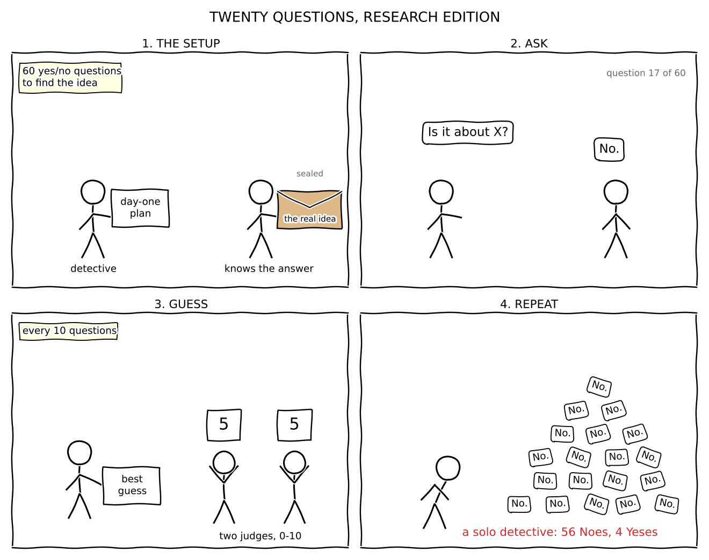
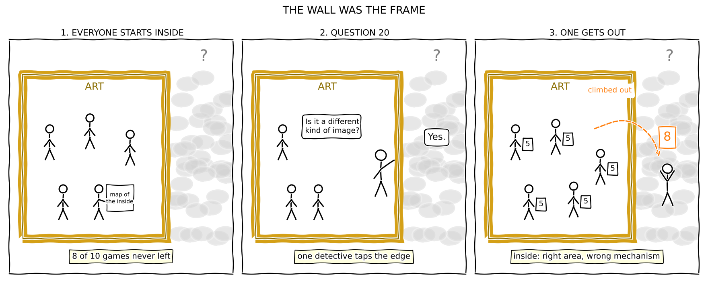

Twenty Questions With Our Own Paper
We gave an AI the plan we wrote on the first day of a project. Then we let it hunt for the idea our paper landed on about two weeks later. In ten games it found that idea once, on its very last guess. A map of the field and a team of models to suggest questions barely helped. The hard step was leaving the frame our plan started in.
Draft: still being edited. This label comes off when it is final.
The game
A recent paper, Re-Search, turned research ideas into Twenty Questions. Its authors took 200 papers from ICML 2026. A model got only each paper's problem and asked up to 100 yes/no questions to rediscover the paper's idea. Most models made nearly all their progress in the first 30 questions.
We copied the game on a smaller scale. A detective model gets only the problem. It asks 60 yes/no questions to a model that knows the answer. After every 10 questions it writes its best guess on a card. Two judge models score each card from 0 to 10. A 5 means the right area but the wrong mechanism. An 8 means the card names the key mechanism. Claude Sonnet 5.5 played detective, gpt-5.4-mini answered, and gpt-5.5 and Claude Opus 5.5 judged.
Most answers are No. A detective playing alone heard Yes 4 times in 60 questions, in both of its games.

Our case
The target was one of our own projects. Its day-one plan was about how AI judges rate art. The paper ended up about a different kind of image. That paper is under blind review, so we stay vague about it here.
Five ways to play
We ran five setups, two games each:
- Solo: the detective asks every question itself.
- Map: before the game, the detective reads a short survey of the field's known approaches, written without seeing the answer.
- Pool: three different models each propose a question, and the detective picks one.
- Map plus pool: both kinds of help.
- Same-model pool: three calls to the detective's own model each propose a question.
Re-Search had tested both kinds of help. A pool of questions from several models lifted its weaker detectives by about a point. Its strongest model lost about half a point. A survey helped most when it named the answer: up to 1.25 points over a survey that left the answer out.
![An animated diagram of one round. The parts stay in place: a field map on the left, three pool models above, the detective in the middle, the answerer on the right, two judges below. A survey sheet slides from the map into the detective. Three question marks fly down from the pool models and the detective keeps one. The question "Is it about X?" travels to the answerer and "No." comes back, a few more times. At question 20 a best-guess card goes to each judge, and both score it 5. Footer: solo has no map and no pool; cost per game is solo $0.43, map $0.45, pool $0.85, map plus pool $0.95, same-model pool $1.01.](game-flow.gif)
What happened
No setup reliably found the idea. Four setups ended with average final scores between 4.5 and 5. The three-model pool averaged 6.8, from one game at 8 and one at 5.5. With two games per setup, that 6.8 is one lucky game.
The lucky game owes little to mixing models. The questions that cracked it came from the detective's own model. The other models' last two questions only confirmed what it had found. The same-model pool never got there, and its three proposals were often near-copies of each other. Every pool cost about twice as much per game as playing solo.
The map did nothing. Map games ended at 5.0 against solo's 4.8, and map plus pool scored lowest of all. Our map covered methods for studying art and never mentioned the other kind of image. In Re-Search's terms it was a decoy, the case where a survey helped least. Our detective was also a strong model, and Re-Search's pool helped its strongest model least.

The wall
The detectives failed for one reason. The plan was about art, and the answer was about a different kind of image. Eight of ten games never learned that. They stayed on art and settled on a card the judges scored 5.
Room 2: Outside the frame
The winning game asked at question 20: "Is the paper about a different kind of image than art?" It got a Yes. Two questions later it knew which kind. At questions 54 to 57, four more Yeses pinned down the mechanism. Its last card named it, and both judges gave it 8.
One other game left art at question 41. It then chased a different wrong idea and ended at 4.

So the hardest step was dropping the starting frame. More askers did not fix that, and neither did a map of the field we started in.
What we changed
Our own team started in the same frame. Over its first three days, our day-one plan went through about 40 review rounds. Almost all were small fixes to definitions and wording, and all of them stayed inside art. The idea came later, from running experiments and looking at what came back.
So we now keep a notebook of things we can't explain: odd model outputs, results that shouldn't happen, methods failing where they should work. Before we rank ideas, we look at about 30 raw examples ourselves. We're not adding model pools or blind field maps to our idea step for now.
A map that pointed toward the answer might help, and we did not test one. This was one project with two games per setup. The whole test cost $8.77.
Next, episode 2: we hid a paper's problem instead of its idea, and tested whether the field text or the answers did the work.